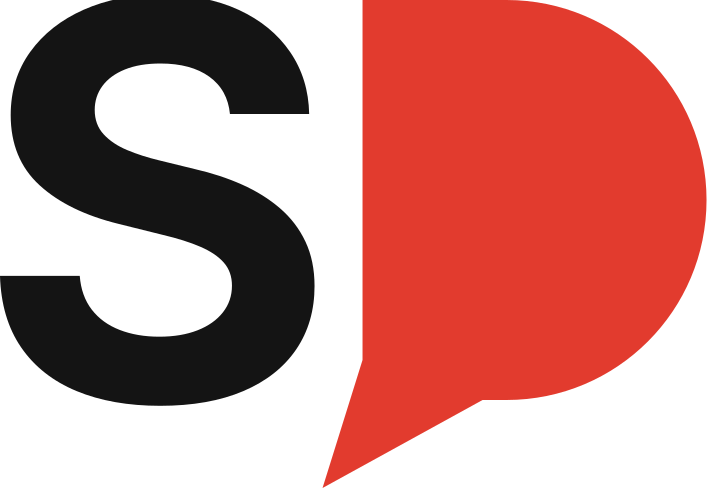
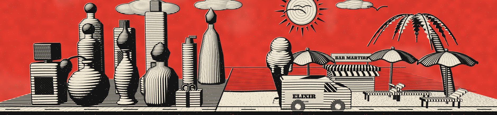

Stefano Doko
English · Shqip
Albania

Stefano Doko
Graphic designer.
Web designer & developer.
Based in Albania.

Dizajner grafik. Dizajner dhe zhvillues uebi. Me bazë në Shqipëri.
Shkruaj në shqip ose anglisht